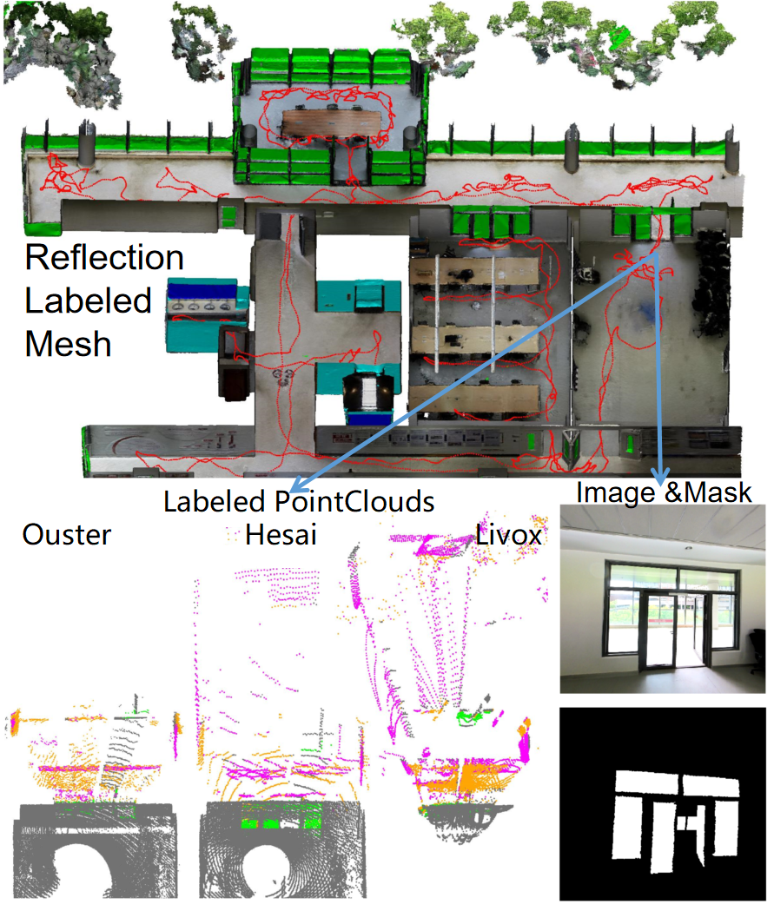
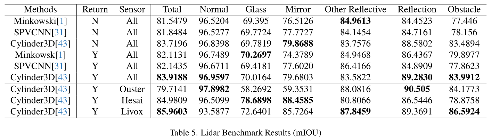
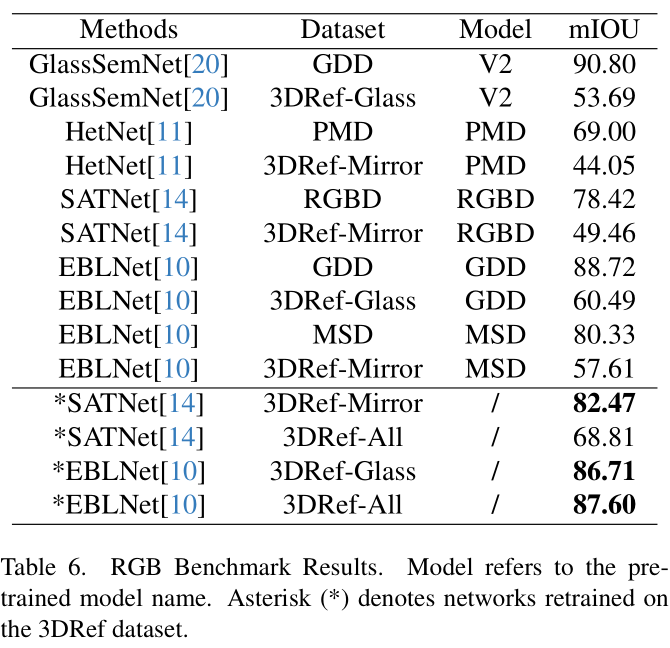

We present the 3DRef dataset, the first large-scale 3D reflection detection dataset containing over 50,000 aligned samples of multi-return Lidar, RGB images, and semantic labels across diverse indoor environments. Textured 3D ground truth meshes enable automatic point cloud labeling for precise annotations. We benchmark Lidar point cloud segmentation and image segmentation methods on glass, mirror, and other reflective object detection. 3DRef provides a comprehensive multi-modal testbed to drive future research towards reliable reflection detection for autonomous systems.
The 3DRef dataset contains three sequences captured in diverse indoor environments with various reflective surfaces like glass, mirrors, whiteboards, and monitors. It provides:

We benchmark Lidar-based and RGB-based reflection detection methods on 3DRef, evaluating factors like multi-return analysis and retraining on the new data.
Key results show:


In the dataset link, we provide the dataset in some folders. We describe the dataset format in the following. For the convinence of download, We separate the folder into 4 zip files.
The raw folder contains the core data needed to recreate the annotations and formatted dataset. The rgb and semantickitti folders provide the formatted data split into train/test sets ready for benchmarking. The network folder enables out-of-the-box evaluation using provided models. Refer to the readme for additional details.
@article{zhao20233dref,
title={3DRef: 3D Dataset and Benchmark for Reflection Detection in RGB and Lidar Data},
author={Zhao, Xiting and Schwertfeger, S{\"o}ren},
journal = {3DV},
year = {2024},
}